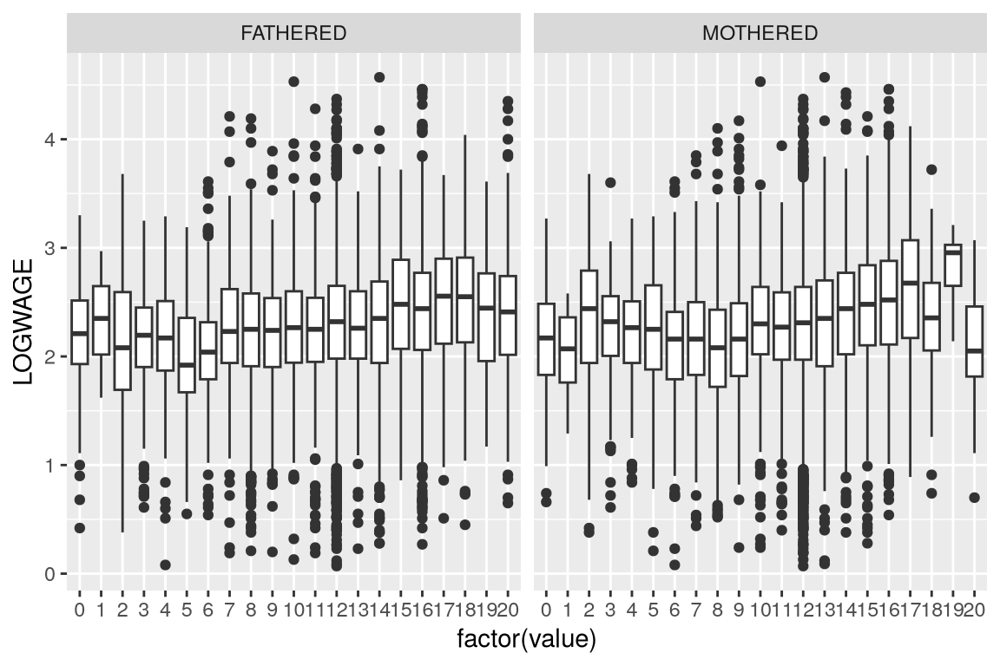

Code
library(ggplot2)
library(tidyr)
library(readr)
library(dplyr)ggplot2.
To carry out the EDA, we rely on multiple tidyverse packages:
ggplot2 provides core visualization capabilitiestidyr allows create and manipulate data structures, e.g., passing from long (wide) to wide (long) data structuresreadris a specialistic library to read Comma Separeted Value file conveniently and efficientlydplyr transforms data frames’ cases and variables, e.g., by slicing, grouping, summarizing datatibble implements a particular type of data frame, i.e., ‘tidy data frames’, which are particularly suited for data analysis and visualizationMainly, the various packages under the ‘tidyverse’ umbrealla offer and integrated set of functionalities supporting the various activities of the data visualization process, from data ingestion to polishing charts.
library(ggplot2)
library(tidyr)
library(readr)
library(dplyr)We read the tabular data file provided by Koop and Tobias, which is a comma-separated value file. First, we check the work directory. Then, we adjust the relative path pointing to the file.
getwd()[1] "/home/simone/githubRepos/data-viz-smm635/tutorials"kt = read_csv("../data/koopAndTobias/koop_tobias.csv")Rows: 17919 Columns: 10
── Column specification ────────────────────────────────────────────────────────
Delimiter: ","
dbl (10): PERSONID, EDUC, LOGWAGE, POTEXPER, TIMETRND, ABILITY, MOTHERED, FA...
ℹ Use `spec()` to retrieve the full column specification for this data.
ℹ Specify the column types or set `show_col_types = FALSE` to quiet this message.The first step of our EDA consists of inspecting a sample of observations, aka a data preview. At this stage, good practices include:
kt# A tibble: 17,919 × 10
PERSONID EDUC LOGWAGE POTEXPER TIMETRND ABILITY MOTHERED FATHERED BRKNHOME
<dbl> <dbl> <dbl> <dbl> <dbl> <dbl> <dbl> <dbl> <dbl>
1 1 13 1.82 1 0 1 12 12 0
2 1 18 3.29 3 7 1 12 12 0
3 1 18 3.21 5 9 1 12 12 0
4 1 18 3.06 6 10 1 12 12 0
5 2 15 2.14 4 6 1.5 12 12 0
6 2 15 2.3 5 7 1.5 12 12 0
7 2 15 2.4 6 8 1.5 12 12 0
8 2 15 2.46 7 9 1.5 12 12 0
9 2 15 2.51 8 10 1.5 12 12 0
10 2 15 2.5 9 11 1.5 12 12 0
# ℹ 17,909 more rows
# ℹ 1 more variable: SIBLINGS <dbl>Then, we consider the fundamental aspects of the ingested data, that is, the number of variables (columns), observations (rows), and cases (clusters of rows referring to the same entity). It is worth noticing that the readr‘s log includes a tabular data file’s number of variables and columns ’by default.’
To get the number of variables, one can either consider the length of kt or use the ncol() function from R’s {base} package.
col_n <- length(kt) # or ncol(kt)
print(col_n)[1] 10To get the number of observations, one can rely on dplyr’s n_distinct() function ― not passing any specific column to the function argument ― or nrow() from R’s {base}.
row_n <- n_distinct(kt) # or nrow(kt)
print(row_n)[1] 17919To count the number of cases in the data, individuals in Koop and Tobias’ data, one has to consider the number of unique values in the column containing the case identifiers (represented by numbers). dplyr’s n_distinct() is a good alternative to do that. Please note that the argument to pass is one or mulitple columns included in the tidy data.
cases <- n_distinct(kt$PERSONID)
print(cases)[1] 2178With the help of tibble’s tribble function, it is possible to wrap up the previously calculated quantities into a single data frame, which we may want to use for further calculcation and/or for illustrative purposes.
key_features <- tribble(
~Observations, ~Variables, ~Cases,
row_n, col_n, cases
)
print(key_features)# A tibble: 1 × 3
Observations Variables Cases
<int> <int> <int>
1 17919 10 2178The data object kt does not contain any columns indicating the number of times that each individual was observed. Hence, we have to create a new data object to conveniently use as input for a ggplot2 figure. The following code cell shows how to use a dplyr pipeline to group kt data around the variable PERSONID and to count the number of observations per PERSONID instance. Not suprisingly, we achieve a data object containing as many observations as unique values in kt$PERSONID. Students are encouraged to familiarize themeselves with dplyr. The cheatsheet is a good place to start. Caveat: all throughout the various sections of this notebook, limited attention is devoted to aestethic features of the plots. In other words, we will deal with bare-bone ggplot2 charts. A separate notebook covers the fine-tuning of ggplot2’s plots.
obs <- kt |>
group_by(PERSONID) |>
count()
ggplot(data = obs, mapping = aes(x = n)) +
geom_bar()The distribution of EDUC is time variant in the data. In other words, the same individual can present different levels of EDUC across measurement occasions. Thus, it may be important to appreciate the highest education level each individual attained. To do so, we create a dplyr pipeline that groups the datapoints around PERSONID and summarize the records by retaining the max of EDUC by PERSONID.
max_ed <- kt |>
group_by(PERSONID) |>
summarise(max = max(EDUC))
ggplot(data = max_ed, mapping = aes(x = max)) +
geom_bar()There are alternative univariate visual forms that we can use to appreciate the distribution of LOGWAGE, such as:
The latter three alternatives are included in ggplot2, while we need to implement the quantile plot visual form on our own.
The quantile plot comprises two data series, the array of probabilities \(F = \{f_{1}, f_{2}, ..., f_{i}, ..., f_{K}\}\) and the corresponding quantiles \(q(f)\) in the (sample) distribution of interest \(x\). The below-displayed code cell the numerical progression seq ― i.e., \(f\) ― by means of the function seq (included in R’s {base}). Then, it passes seq to quantile’s argument (includedin R’s {base}) to compute \(q(f)\). At this point, it is possible to implement the quantile plot in ggplto2 with geom_point().
seq <- seq(0, 1, 0.05)
qf <- tibble(f = seq, qf = quantile(kt$LOGWAGE, probs = seq, names = FALSE))
ggplot(data = qf, mapping = aes(x = f, y = qf)) +
geom_point()Histograms are another popular univariate visual forms to plot the distribution of a continuous variable like LOGWAGE. Figure 4 and Figure 5 show a traditional histogram and the kernel density plot of the histogram of LOGWAGE, respectively.
ggplot(data = kt, mapping = aes(x = LOGWAGE)) +
geom_histogram()ggplot(data = kt, mapping = aes(x = LOGWAGE)) +
geom_density(kernel = "gaussian")The boxplot, presented in Figure 6, is yet another way of plotting the univariate distribution of a continuous variable. As described in Cleveland (1993), the boxplot can be seen as simplified version of the quantile plot form. It is a simplified version in the sense it provides information on three quantiles (the lower quartile, the median, and the upper quantile of a sample distribution \(x\)) and two other reference values, that is, the lower and upper adjacent values (i.e., the sample values closer to but not less than \(-1.5 * q(75) - q(25)\), and closer to but not larger than \(1.5 * q(75) - q(25)\))
ggplot(data = kt, mapping = aes(y = LOGWAGE)) +
geom_boxplot(orientation = "x")Considering the dataset at hand, possible bivariate visual forms regard the association/correlation between LOGWAGE and EDUC. When both variables are continuous, a scatter diagram like Figure 7 would be a plausible visual form. However, when one variable is continuous and the other is discrete, it is more appropriate to draw a series of boxplots, as shown in Figure 6, or violin plots, as shown in Figure 9, which can be thought as vertically-oriented kernel density plots.
ggplot(data = kt, mapping = aes(x = EDUC, y = LOGWAGE)) +
geom_point() +
geom_smooth(formula = y ~ x, method = lm)ggplot(data = kt, mapping = aes(x = factor(EDUC), y = LOGWAGE)) +
geom_boxplot()ggplot(data = kt, mapping = aes(x = factor(EDUC), y = LOGWAGE)) +
geom_violin(scale = "area")Using ggplot2‘s faceting capabilities, we may want to compare two associations: how LOGWAGE varies across FATHERED and MOTHERED, that is, an individual’s father and mother education, respectively. However, the data at hand are not arranged to facilitate the creating of a ggplot2 plot with faceting. What we need would be a ’long’ format data table looking like the following:
| PERSONID | LOGWAGE | PARENT | PARENT EDUCATION |
|---|---|---|---|
| 1 | 1.82 | Father | 12 |
| 1 | 1.82 | Mother | 11 |
| 2 | 2.14 | Father | 14 |
| 2 | 2.14 | Mother | 15 |
However, we have a ‘wide’ format data table:
| PERSONID | LOGWAGE | FATHERED | MOTHERED |
|---|---|---|---|
| 1 | 1.82 | 12 | 11 |
| 2 | 2.14 | 14 | 15 |
Clearly, the latter data structure does not provide us with any suited columns to pass to the faceting parameter of a ggplot2 plot. The former does, though. To achieve a ‘long’ format data table, we rely on tidyr‘s function pivot_longer, which stacks FATHERED and MOTHERED datapoints ’vertically’ and place them in the same column of a tidy dataframe. Moreover, pivot_longer creates a second column adjudicating between ‘father’ or ‘mother’ datapoints.
kt_pivot <- kt |>
select(PERSONID, LOGWAGE, MOTHERED, FATHERED) |>
pivot_longer(cols = ends_with("ED"))
ggplot(data = kt_pivot, mapping = aes(x = factor(value), y = LOGWAGE)) +
geom_boxplot() +
facet_wrap(~name, ncol = 2)
Cleveland, William S. Visualizing data. Hobart press, 1993.
Koop, Gary, and Justin L. Tobias. “Learning about heterogeneity in returns to schooling.” Journal of Applied Econometrics 19, no. 7 (2004): 827-849.